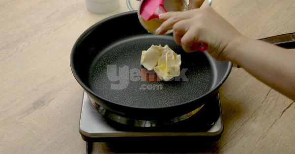
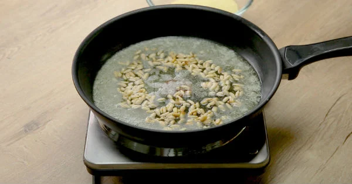
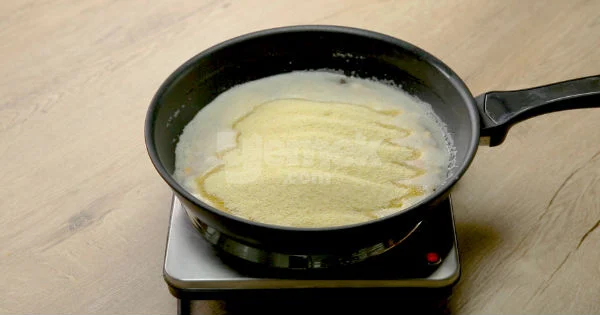
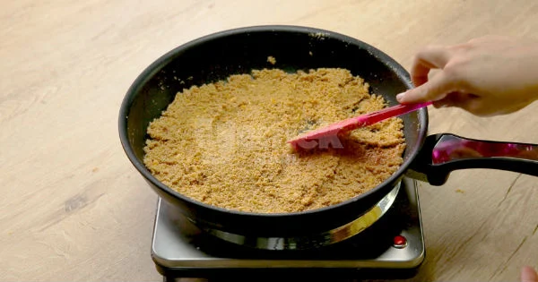
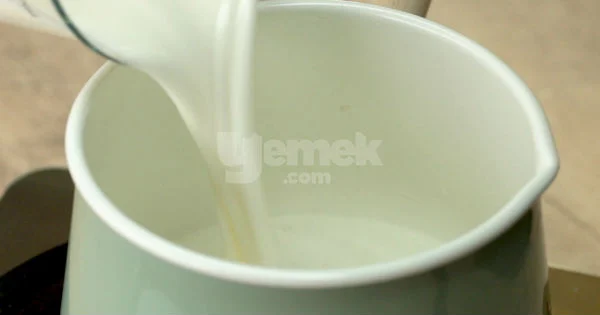
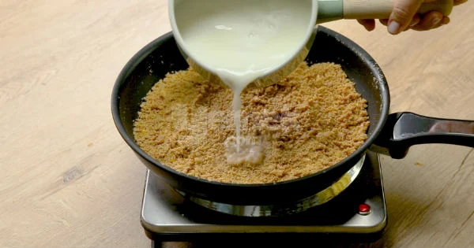
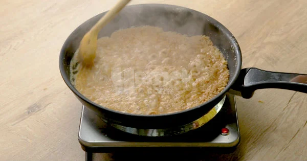
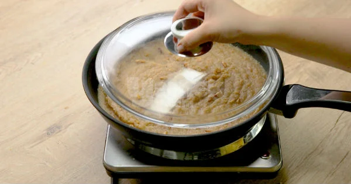
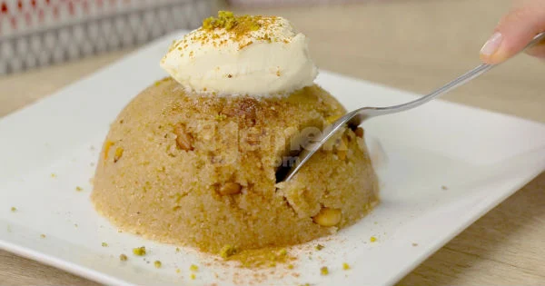

Damla Çikolatalı Kakaolu Kek Tarifi İçin Malzemeler
- 3
adet
yumurta
- 1,5
su bardağı
toz şeker
- 2
çay bardağı
süt
- 1
çay bardağı
ayçiçek yağı
- 2,5
su bardağı
un
(elenmiş)
- 2
tepeleme tatlı kaşığı
kakao
- 2
yemek kaşığı
çikolata kreması
(sürülebilir çikolata)
- 1
çay bardağı
damla çikolata
- 1
paket
kabartma tozu
İrmik Helvası Tarifi Nasıl Yapılır?
-

İrmik helvası için 3
yemek kaşığı tereyağını tavada eritin.
-

Yarım su bardağı çam
fıstığını içine atarak kavurmaya başlayın.
-

Fıstıklar kavrulduktan
sonra 1,5 su bardağı irmiği tencereye aktarın.
-

Sürekli karıştırıp,
kısık ateşte 20 dakika kadar kavurun.
-

Tatlının şerbeti için;
1,5 su bardağı su, 1,5 su bardağı şeker ve 1,5 su bardağı sütü küçük bir
sos tenceresine alın. Karıştırdıktan sonra kısık ateşte kaynamaya
bırakın.
-

İrmik iyice kavrulduktan
sonra sıcak şerbet karışımını, tavaya azar azar aktarın.
-

Sıcak şerbetin etkisiyle
fokur fokur kaynamaya başlayan irmik sürekli olarak karıştırmaya devam
edin.
-

Helvayı kısık ateşte
8-10 dakika kadar pişirmeye devam edin. Dinlenmesi için üzerine bir
kapak kapatın.
-

İrmik helvası hazır!
Demlenen irmik helvasını servis kaselerine alıp, ters çevirip
çıkardıktan sonra arzuya göre tarçın ilavesiyle birlikte dondurma ile
servis edin. Yorumlarınızı bizlerle paylaşın! Afiyet olsun!